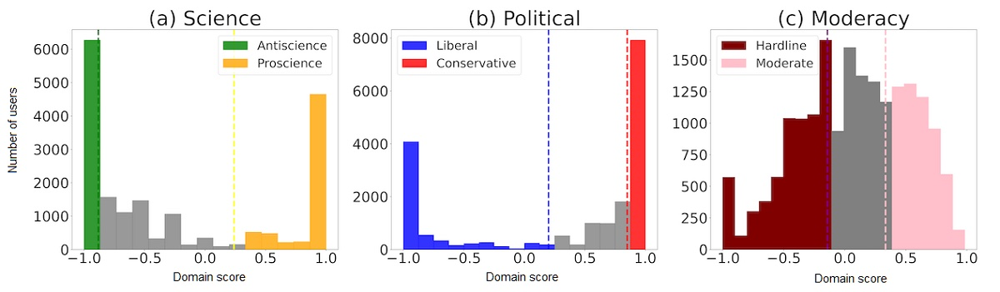
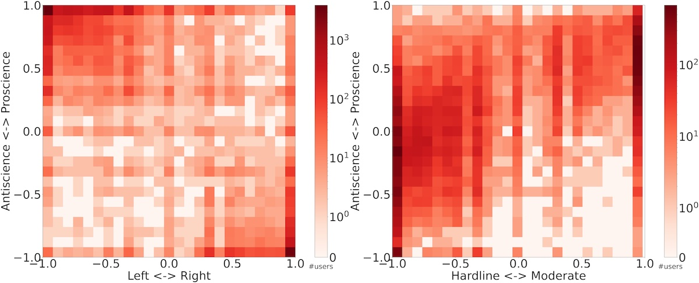
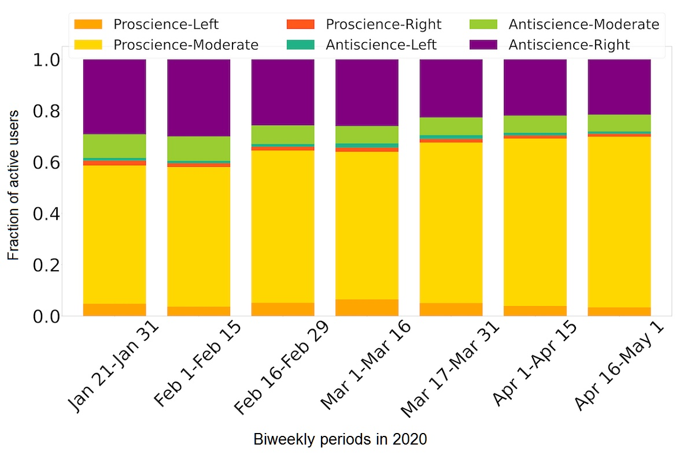
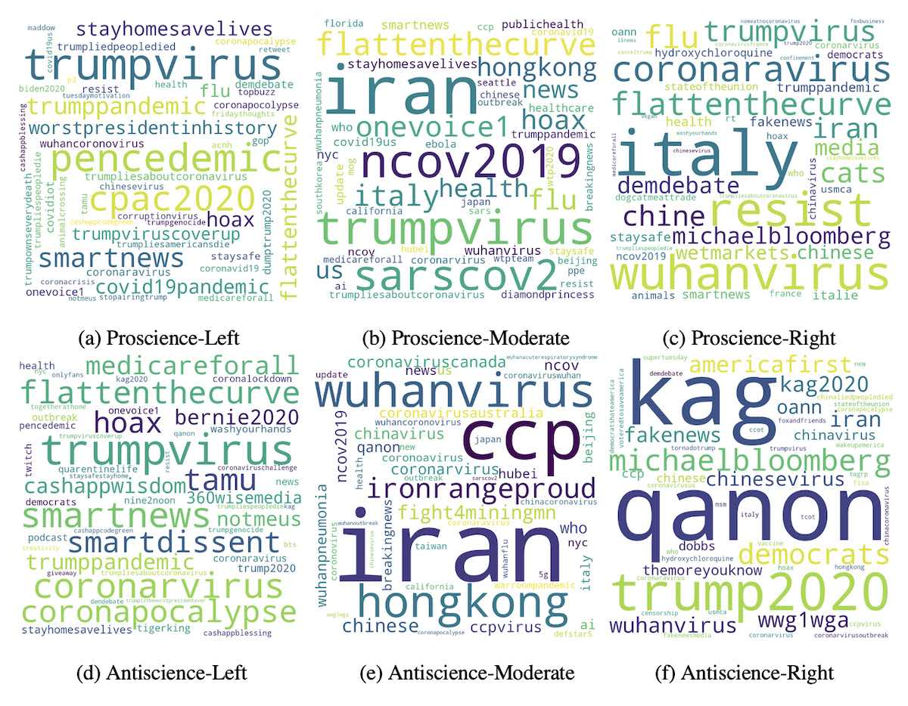
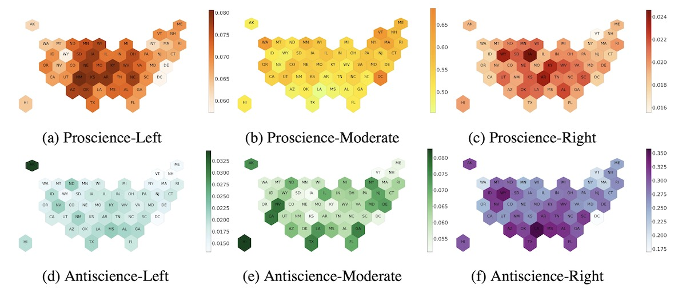

Ashwin Rao, Fred Morstatter, Minda Hu, Emily Chen, Keith Burghardt, Emilio Ferrara, Kristina Lerman
The novel coronavirus pandemic continues to ravage communities across the United States. Opinion surveys identified the importance of political ideology in shaping perceptions of the pandemic and compliance with preventive measures. The aim of this study was to measure political partisanship and antiscience attitudes in the discussions about the pandemic on social media, as well as their geographic and temporal distributions. We analyzed a large set of tweets from Twitter related to the pandemic, collected between January and May 2020, and developed methods to classify the ideological alignment of users along the moderacy (hardline vs moderate), political (liberal vs conservative), and science (antiscience vs proscience) dimensions. We found a significant correlation in polarized views along the science and political dimensions. Moreover, politically moderate users were more aligned with proscience views, while hardline users were more aligned with antiscience views. Contrary to expectations, we did not find that polarization grew over time; instead, we saw increasing activity by moderate proscience users. We also show that antiscience conservatives in the United States tended to tweet from the southern and northwestern states, while antiscience moderates tended to tweet from the western states. The proportion of antiscience conservatives was found to correlate with COVID-19 cases. Our findings shed light on the multidimensional nature of polarization and the feasibility of tracking polarized opinions about the pandemic across time and space through social media data.

The distribution of domain scores along science, political, and moderacy dimensions. (a) The vertical lines at 0.42 and −1 mark the top and bottom 30% cutoffs of distribution along the science dimension, which are binned as proscience (+1) and antiscience (−1), respectively. (b) The vertical lines at 1 and −0.33 mark the top and bottom 30% cutoffs of distribution along the political dimension, which are binned as conservative (+1) and liberal (−1), respectively. (c) The vertical lines at 0.38 and −0.18 mark the top and bottom 30% cutoffs of distribution along the moderacy dimension, which are binned as moderate (+1) and hardline (−1), respectively.

Polarization of COVID-19 tweets. On the left is the heat map of polarization (domain scores) along the science-partisanship dimensions. On the right is the heat map of polarization (domain scores) along the science-moderacy dimensions. Each bin within the heat map represents the number of users with domain scores falling within that bin. We find that tend to be more liberal while anti-science users tend to be more conservative.

Fraction of active users per ideological group in biweekly periods. Moderate pro-science users become slightly more common over time due to changes in the demographics of users and not because users change their opinions.

Topics of discussion within the six ideological groups. The top row (from left to right) illustrates topics for proscience-left, proscience-moderate, and proscience-right groups. The bottom row (from left to right) illustrates topics for antiscience-left, antiscience-moderate, and antiscience-right groups.

Fraction of US states' Twitter users per ideological category. Plots (a) to (c) (top row, left to right) show the fraction of states' Twitter users who were classified as proscience-left, proscience-moderate, and proscience-right, respectively. Plots (d) to (f) (bottom row, left to right) show the fraction of states’ Twitter users who were classified as antiscience-left, antiscience-moderate, and antiscience-right, respectively. The vertical bars next to the maps indicate the fraction of Twitter users in the state belonging to the ideological group. Two-letter abbreviations are used for each state. We notice that anti-vaccine users tend to cluster in the Southeast and upper Western US. Pro-science moderates, meanwhile, are seen throughout the US, while pro-science liberals and conservatives tend to concentrate in the Midwest and Southwest.